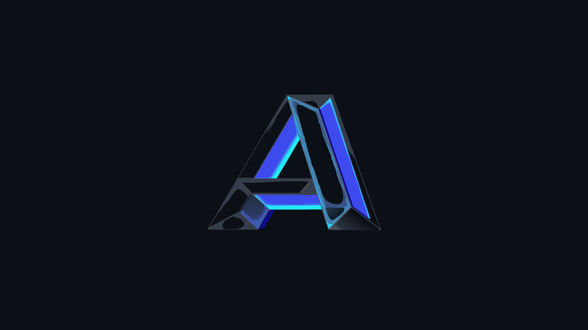
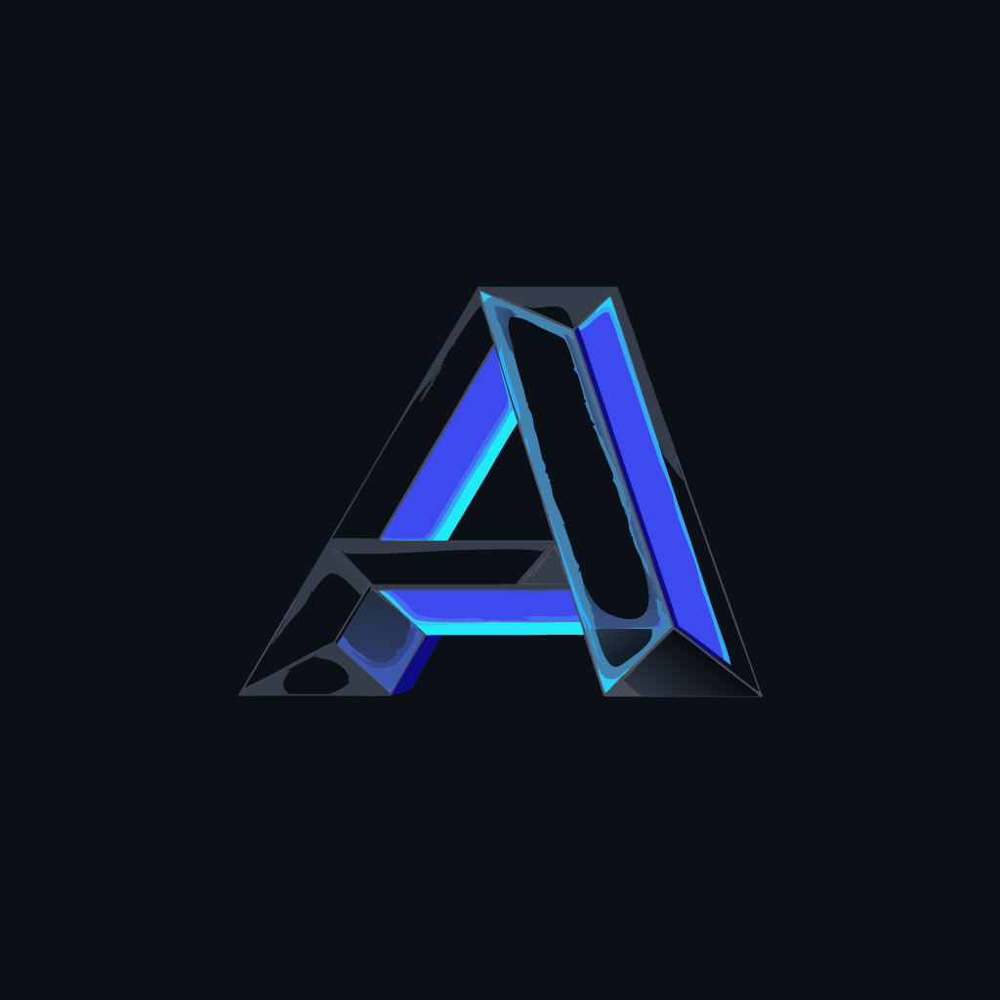

Моніторинг каналів
Бот сканує канали та біржі 24/7 і одразу додає нові вакансії у стрічку.

Бот автоматично моніторить українські IT-канали, біржі та джерела вакансій. Штучний інтелект аналізує кожну пропозицію та фільтрує її за вашим стеком технологій, досвідом та бажаною заробітною платою.
Результат — список відповідних вакансій прямо у вашому Telegram. Жодних зайвих сайтів та реєстрацій — все в одному чаті з ботом.
Бот сканує канали та біржі 24/7 і одразу додає нові вакансії у стрічку.
Штучний інтелект порівнює ваш стек і досвід з вимогами кожної вакансії.
Бот може написати супровідний лист під конкретну вакансію одним натисканням.
Нові пропозиції приходять миттєво — ви будете серед перших, хто відреагує.
Нічого не знайдено. Спробуйте змінити запит або категорію.
Власних записів поки немає.
